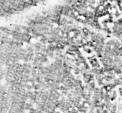

This tool is meant to close relatively small data gaps in otherwise complete raster maps. As a rule of thumb, "relatively small" means that there are at least as many data cells as there are "no data" cells in the areas where data gaps are to be closed. It works directly on the raster input and performs interpolation to fill "no data" cells only if there are enough data points within a user-definable maximum distance from the cell to be filled/interpolated.
Available interpolators (replacement modes) are:
The spatially weighted mean is equivalent to an Inverse Distance Weighting (IDW; see also r.surf.idw) interpolation. The simple mean is equivalent to a low-pass filter. Median and mode replacements can also be achieved using r.neighbors.
However, this tool has been optimized for fast processing of very large raster datasets. It sacrifices spatial accuracy for speed and a small memory foot print. It also prevents unreliable interpolation in areas with no reasonably close data points (rather, it will retain any "no data" cells in such areas). Processing time will increase exponentially with higher distance settings.
Applications where r.fill.gaps' properties are advantageous include the processing of
very high resolution close range scanning or remote sensing datasets. These are characterized by densely spaced
measurements that show data gaps after rasterization, due to blind spots, instrument failures,
and mismatches between the GIS' raster cell grid and the original measurement locations.
In these cases, r.fill.gaps should typically be run using the "weighted mean" method
and with a relatively small distance setting, that reflects the maximum acceptable distance to
a given measurement's location.
The images below show a gradiometer dataset with gaps, and its interpolated equivalent, using the spatially weighted mean operator.

r.fill.gaps can also be useful in raster map generalization. Often, this includes removing small clumps of categorized cells and then filling the resulting data gaps without "inventing" any new values. In these and similar cases, where relatively small data gaps have to be closed without modifying the input data range, the "-p" flag should be used in conjunction with the "mode" or "medoid" interpolators.
For optimal interpolation from a small number of (vector) data points, use a different, vector points based, tool, such as v.surf.idw or v.surf.rst.
The "distance=" setting will be honored as accurately as the current region's resolution settings allow. The program will warn if the distance cannot be expressed as whole cells at the current resolution. In this case, the number of cells in the neighborhood will be rounded up. If "distance=" is set to a relatively large value, processing time will quickly approach and eventually exceed that of vector-based interpolation techniques such as v.surf.rst.
In any case, due to the rounding effect introduced by using cells as spatial units, the actual maximum distance considered by the interpolation may be up to half a cell diagonal larger than the one specified by the user.
The interpolator type "wmean" (spatially weighted mean) is Inverse Distance Weighting (IDW).
To speed up computation, a pre-computed matrix of spatial weights is used. This matrix can
be examined before running the interpolation, by setting the "-p" flag.
In mode "wmean", the "power=" option has the standard function: higher values mean
that further away points will lose their influence on the interpolation point more rapidly.
Another way of explaining this effect is to state that larger "power" settings result in more
localized interpolation, smaller ones in more globalized interpolation.
The standard setting is "power=2.0".
The interpolators "mean", "median", "medoid" and "mode" are simply calculated from all cell values within the search radius. No spatial weighting is applied in these cases.
The "medoid" interpolator is very similar to "median", but it will always choose a value that is part of the original input data. If there is an odd number of input data (interpolating) cells in the neighborhood, then the medoid will be the same as the median. If the number is even, then the medoid will be either the lower (smaller) one of the two center values in the sorted list of elements.
Likewise, the "mode" of the input data may not always be unique. In that case, the mode will be the smallest value with the highest frequency.
Often, input data will contain spurious extreme measurements (spikes, outliers, noise) caused by the limits of sensor sensitivity, device defects, environmental influences, etc. If the normal, valid range of input data is known beforehand, then the "minimum=" and "maximum=" options can be used to exclude those input cells whose values are below or above that range, respectively. This will prevent the influence of spikes and outliers from spreading through the interpolation.
In addition, a range list of values can be passed via the "include=" option to limit the input data values that will be considered for gap filling/interpolation. If both a min-max range and an include list are been specified, then first the values which are outside the range will be discarded, followed by those which are inside the range but not on the include list.
If the "-p" (preserve) flag is given, then the interpolation will not replace existing input cell values.
Thus, the given cells will always be copied through to the result.
Besides the result of the interpolation/gap filling, a second output can be specified via the
"uncertainty=" option. The cell values in this map represent a simple measure of how
much uncertainty was involved in interpolating each cell value of the primary output map, with
"0" being the lowest and "1" being the theoretic highest uncertainty. Uncertainty is measured
by summing up all cells in the neighborhood that contain a value in the input map,
multiplied by their weights, and dividing the result by the sum of all weights in the neighborhood.
For IDW interpolation with "mode=wmean", this means that interpolated output cells that
were computed from many nearby given input cells have very low uncertainty and vice versa.
For all other modes, all weights in the neighborhood are constant "1" and the uncertainty measure
is a simple measure of how many input data cells were present in the neightborhood.
This tool can handle cells with different X and Y resolutions. However, note that the weight matrix
will be skewed, with higher weights occurring close to the center and along the axis with the higher resolution.
This is because weights on the lower resolution axis are less accurately calculated.
The skewing effect will be stronger if the difference between the X and Y axis resolution
is greater and a larger "power" setting is chosen.
For example, this is the weights distribution for a region with a resolution of 0.25 m on the W-E axis, 0.125 m on the S-N axis, a radius of 1.0 m and a power setting of 2.0:
0.80 0.94 1.00 0.94 0.80
0.98 1.21 1.31 1.21 0.98
0.89 1.23 1.60 1.78 1.60 1.23 0.89
1.05 1.56 2.21 2.56 2.21 1.56 1.05
0.80 1.23 2.00 3.20 4.00 3.20 2.00 1.23 0.80
0.88 1.42 2.56 4.92 7.11 4.92 2.56 1.42 0.88
0.94 1.60 3.20 8.00 16.00 8.00 3.20 1.60 0.94
0.98 1.73 3.76 12.80 64.00 12.80 3.76 1.73 0.98
1.00 1.78 4.00 16.00 16.00 4.00 1.78 1.00
0.98 1.73 3.76 12.80 64.00 12.80 3.76 1.73 0.98
0.94 1.60 3.20 8.00 16.00 8.00 3.20 1.60 0.94
0.88 1.42 2.56 4.92 7.11 4.92 2.56 1.42 0.88
0.80 1.23 2.00 3.20 4.00 3.20 2.00 1.23 0.80
1.05 1.56 2.21 2.56 2.21 1.56 1.05
0.89 1.23 1.60 1.78 1.60 1.23 0.89
0.98 1.21 1.31 1.21 0.98
0.80 0.94 1.00 0.94 0.80
This property of the weights matrix directly reflects the better information density along the higher resolution axis.
If this leads to bad results, then the only way to work against it (assuming that the cell dimensions should not be adjusted) is to choose a smaller "power" coefficient.
Normally, the value of the center cell will not be considered when calculating the chosen neighborhood statistic. This can be changed by using the "-c" ("include center") flag. Note that the center cell will always be excluded if "method=wmean" is used: The center cell has "0" distance from (is identical with) the cell to be interpolated, so that its weight would be infinitely large; this would have the same effect as using the "-p" flag.
Note on printing the weights matrix (using the "-w" flag): the matrix cannot be printed if it is very large. Likewise, individual weights that result in very large number will be printed as "[????]".
The memory estimate provided by the "-m" flag is a lower limit of the amount of RAM that will be needed.
r.fill.gaps input=measurements output=result dist=3.0 method=wmean uncertainty=uncert_mapRun a fast low-pass filter on an input map:
r.fill.gaps input=measurements output=result dist=10.0 method=meanFill some data gaps in a categorized raster map; replace "no data" cells only with values that are already present in the neighborhood:
r.fill.gaps input=categories output=result dist=100.0 method=medoid -p
Last changed: Tue Nov 1 16:08:21 CET 2011
Main index - raster index - Full index
© 2003-2011 GRASS Development Team